Ürgüp ve yakın çevresindeki 17 tarihî ve doğal nokta. 17 historical and natural sites in and around Ürgüp.
Haritayı aç · Open map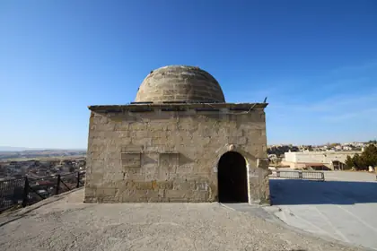
Tahsinağa KütüphanesiKültür · Culture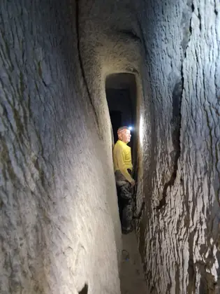
Kayakapı TüneliYeraltı & Tünel · Underground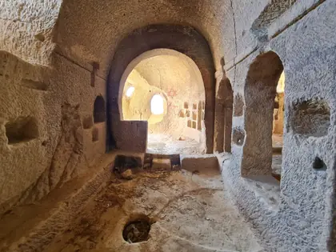
Kayakapı KiliseleriKilise · Church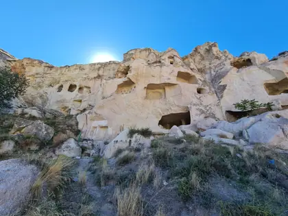
Dereler Kaya YerleşimiYeraltı & Tünel · Underground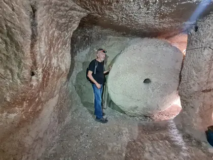
Hitit Oteli Yeraltı Yapı KompleksiYeraltı & Tünel · Underground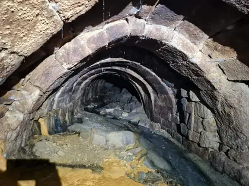
Dereler TüneliYeraltı & Tünel · Underground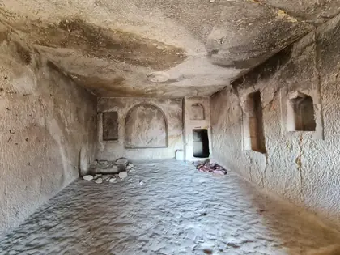
Temenni Tepesi Kaya YerleşimiKaya Yerleşim · Rock Settlement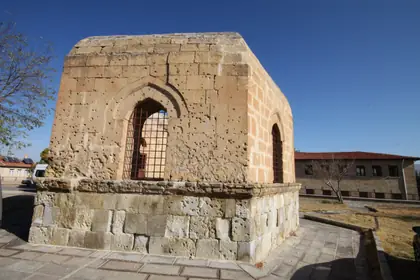
Altı Kapılı TürbeTürbe · Tomb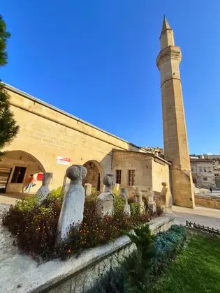
Karamanoğlu CamiiCami & Medrese · Mosque & Madrasa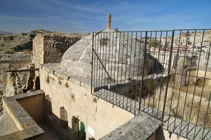
Arslangazi TürbesiTürbe · Tomb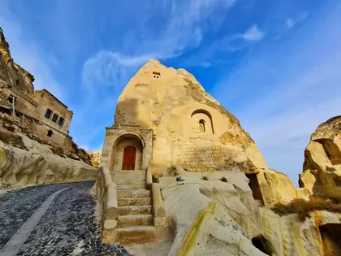
Aziz Yuhannes Kilisesi ve ÇilehanesiKilise · Church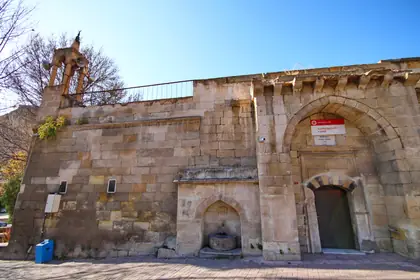
Medreseli Yahya Efendi CamiiCami & Medrese · Mosque & Madrasa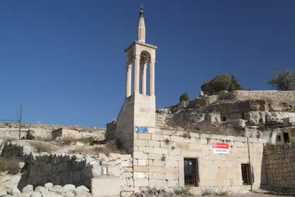
Esbelli Kaya CamiiCami & Medrese · Mosque & Madrasa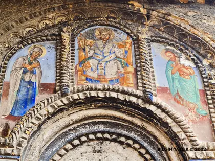
Aziz Georgios KilisesiKilise · Church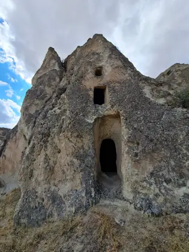
Şadikayası ManastırıManastır · Monastery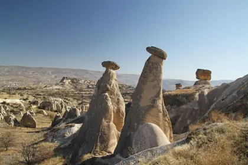
Üç GüzellerDoğa & Vadi · Nature & Valley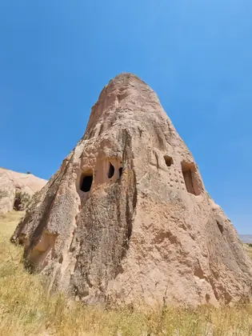
Karağandere VadisiDoğa & Vadi · Nature & Valley